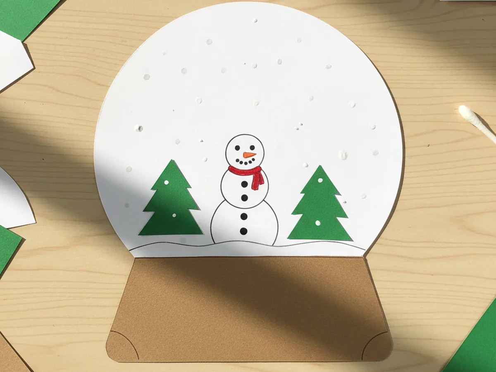
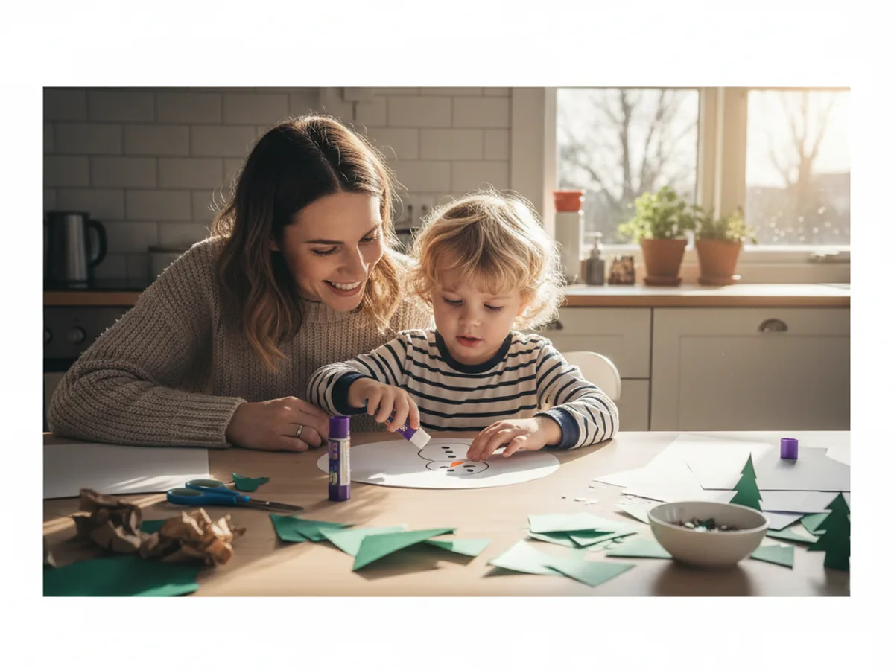
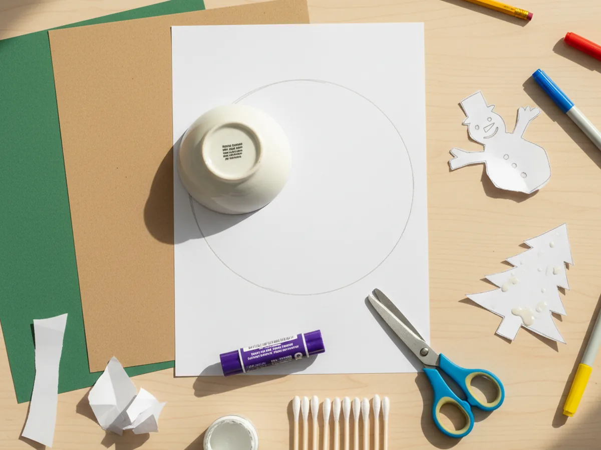
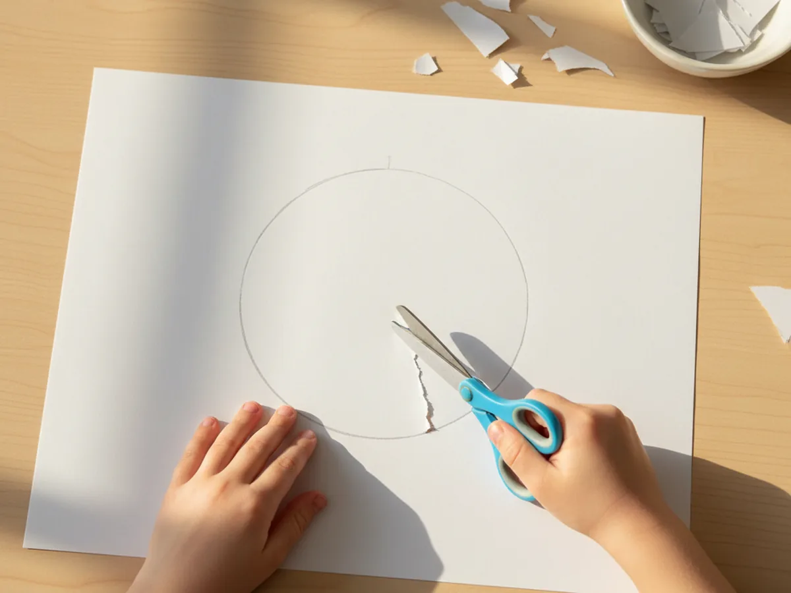
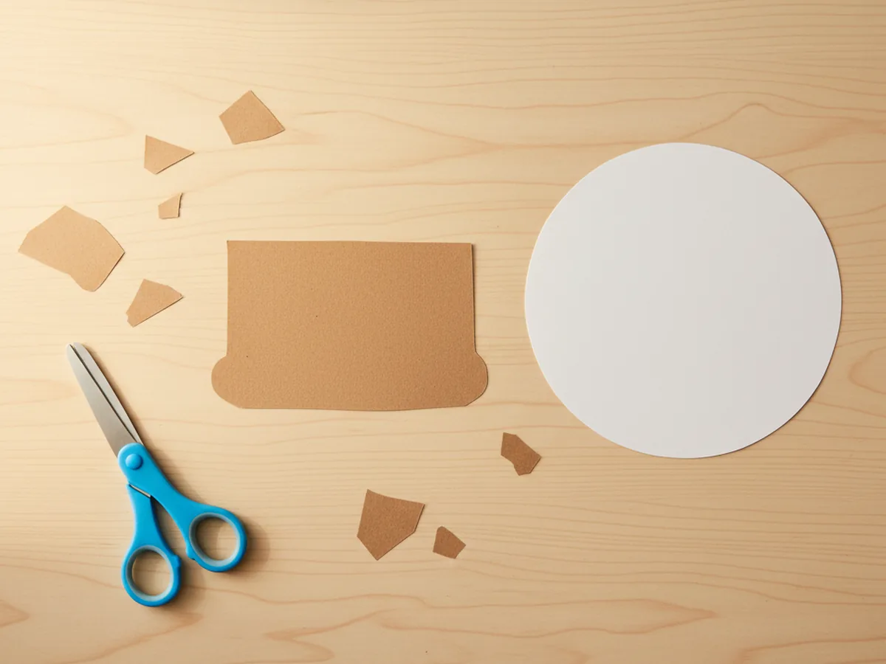
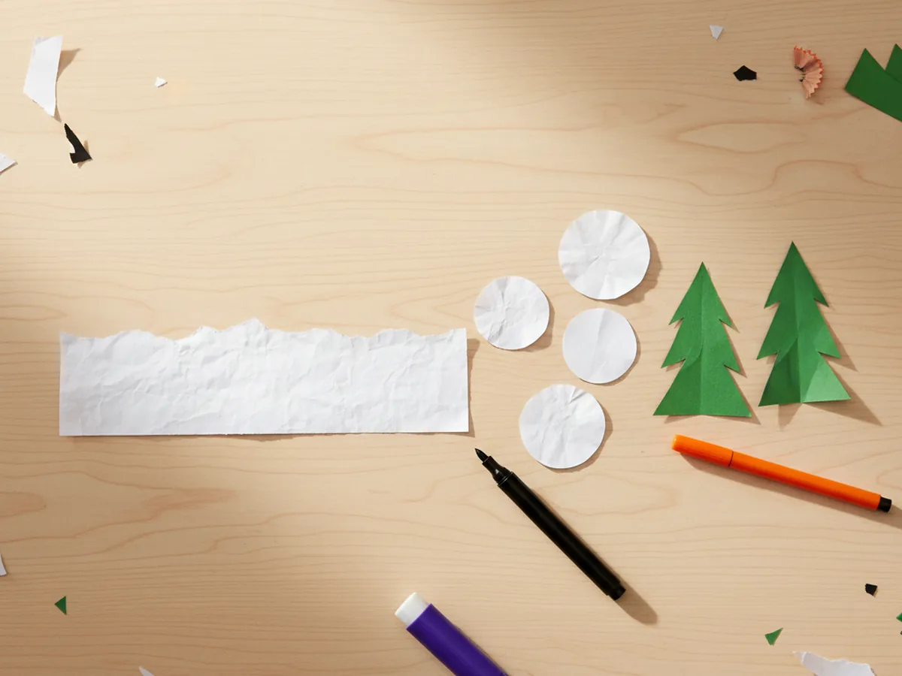
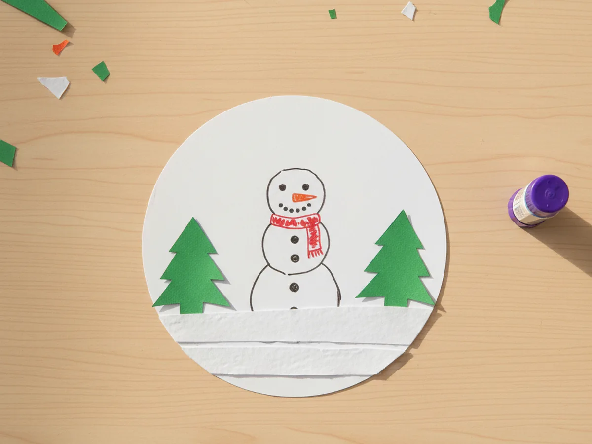
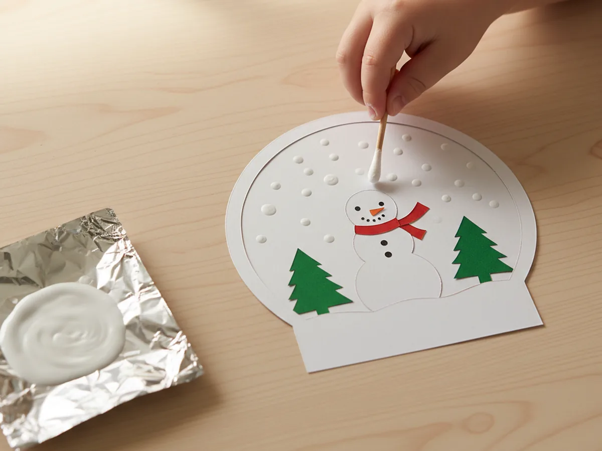
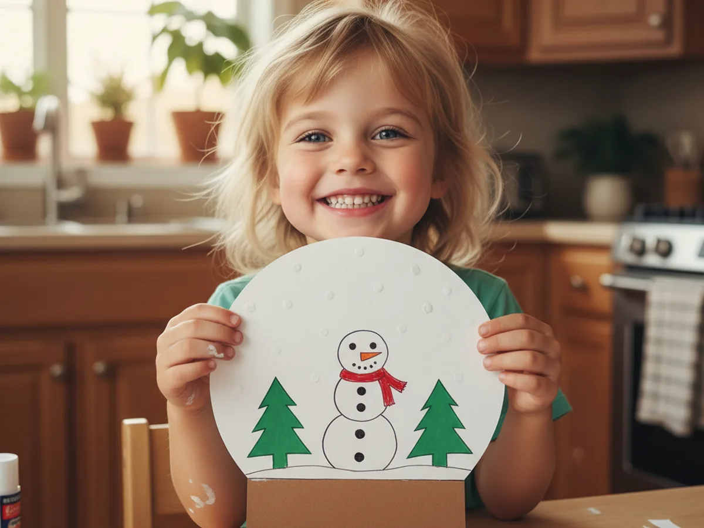

This little snow globe paper craft is one of those cozy, calm winter projects that turns a few pieces of construction paper into a tiny world your child will want to show off all season long. You cut a big white circle for the globe, glue a sweet little snowman scene inside, and dab on tiny white paint dots to look like falling snowflakes. The first time your child holds it up and sees their tiny paper snowman tucked safely inside the dome, you can almost feel the room get warmer. ❄️
It is a low-stress project for kids age 4 and up, and one of the easiest ways to bring a sweet winter wonderland feeling to the kitchen table without any glitter to vacuum later. Younger kids can press the snow dots and stick the trees onto the scene, while older kids can cut their own circle and design their tiny world. Either way, this snow globe paper craft ends up looking display-worthy and feels like a real little winter keepsake your child made themselves.
Why Kids Love This Craft
There is something quietly magical about building a little world inside a circle. Kids love deciding what goes in the snow globe, and the simple pretend play of creating their own tiny winter scene draws them right in. When you let them choose the snowman's button colors or the height of the trees, they feel like the proud designer of their own miniature wonderland. By the time the snow dots go on, most kids are bouncing in their chair waiting to see the falling snow appear.
This craft also gives little hands a sweet workout for fine motor skills. Cutting the circle, gluing tiny pieces, and dabbing dots with a cotton swab all build the same hand muscles that help with writing and using utensils. None of it ever feels like practice though. It just feels like building a snowy little surprise for someone they love.
The very best part is the moment they hold up their finished winter snow globe craft and shout, "Look, it is snowing inside." That sweet pride moment is the whole reason we craft together in the first place. The dotted snow against a small paper snowman is unexpectedly charming, and a finished paper snow globe craft tends to look prettier than you might expect for such a simple project. ⛄

What You'll Need
Here is everything you need to make this snow globe paper craft at home. Most of it is already in your craft drawer, and the rest is the kind of basic supply that will get used many more times this winter.
- Hamilco White Cardstock Paper, 65 lb, 50 Pack, sturdy enough to hold its shape as the round globe dome
- Crayola Construction Paper, 240 ct Assorted, gives you brown for the base and green for the trees and any extras
- Fiskars 5 Inch Blunt Tip Kid Scissors, safe for little hands and cuts cardstock cleanly
- Elmer's Disappearing Purple Glue Stick, 6 Pack, dries clear so glue lines disappear under the paper pieces
- Crayola Broad Line Markers, 10 Count, for drawing the snowman face, scarf, and tiny details
- Apple Barrel Snow White Acrylic Paint, 2 oz, the magic ingredient for the dotted falling snow effect
- Q-tips Cotton Swabs, 500 Count, the secret tool for perfect little dotted snowflakes
- A pencil and a small bowl, to trace and cut a clean circle for the globe
Step-by-Step Instructions
Take this one calm step at a time and your child will have a finished snow globe in about 40 minutes. Let them handle every step they can manage, even if it just means choosing the next color.
Step 1: Set Up Your Snow Globe Paper Craft Space
Lay out a placemat or piece of newspaper to keep the table tidy and to catch any little paint drips. Put the cardstock, the construction paper, the scissors, the glue stick, the markers, and the white paint within reach. Set out a small bowl for tracing the circle and a few cotton swabs for the snow dots. Choosing the construction paper colors together is half the fun for kids.

Step 2: Cut the Big White Globe Circle
Place a small bowl upside down on a sheet of white cardstock and let your child trace around it with a pencil. Aim for a circle about 7 inches across, since that is a good size for a snowman scene without feeling cramped. Once the circle is drawn, slowly cut around the line together. If your child is brand new to cutting curves, you can hold the cardstock steady while they turn it slowly with their other hand.

Step 3: Cut the Globe Base from Construction Paper
Grab a sheet of brown construction paper and cut a thick rectangle about 7 inches wide and 2 inches tall to serve as the wooden base of the globe. Round the bottom corners slightly so the base looks like a soft little pebble. This part comes together fast and gives kids a quick win in the middle of the project. If you want a fancier look, use grey paper instead and pretend the base is stone.

Step 4: Cut Out the Winter Scene Pieces
Now for the fun part. Cut a thin strip of white construction paper about 7 inches long and 1 inch tall for the snowy ground inside the globe. From more white paper, cut three small circles in graduated sizes for the snowman body, head, and middle. From green construction paper, cut two simple triangle trees, one a little taller than the other. Use markers to draw a face, two black coal eyes, an orange carrot nose, and a few small buttons on the snowman.

Step 5: Glue the Winter Scene Inside the Globe
Set the white cardstock circle flat on the table and run the glue stick across the back of the snowy ground strip. Press it across the bottom of the circle so it follows the curve. Glue the snowman in the middle, sitting right on top of the snowy ground, then add the two green trees on either side. Help your child press each piece down for a few seconds so the glue grabs. The little winter scene comes together in just a couple of minutes.

Step 6: Dab Falling Snow with a Cotton Swab
Squeeze a small puddle of white acrylic paint onto a paper plate or piece of foil. Dip the cotton end of a fresh swab into the paint and gently dab little dots all over the inside of the globe, especially in the open space above the snowman. Keep the dots small and a little bit random for a real falling snow look. This is usually the moment your child gasps and says, "It is really snowing." Use a fresh cotton swab if the first one gets too soggy.

Step 7: Glue the Globe to the Base and Display
Once the paint dots are dry to the touch, run a thick line of glue along the top edge of the brown rectangle base and press the bottom of the white circle onto it. Hold for about 10 seconds so the two pieces grip together. Let the finished snow globe paper craft dry flat for another 10 minutes, and then your child can prop it up on a bookshelf, the fridge, or a windowsill where everyone can see it. 💕

Variations to Try
Christmas Tree Snow Globe: Skip the snowman and fill the inside of the globe with three tall green construction paper trees decorated with marker dots for ornaments and a yellow paper star at the top. This version is a sweet little keepsake to give to a grandparent before Christmas.
Family Photo Snow Globe: Glue a small printed photo of your child or the whole family inside the white circle instead of the paper snowman, then dab the snow dots over the open sky around the photo. The photo version is a gorgeous handmade gift and looks adorable on a winter mantel.
Tissue Paper Snow Version: For toddlers who are too young for paint dots, swap the painted snow for tiny torn pieces of white tissue paper glued randomly across the inside of the globe. Same craft moment, same cozy result, with a much simpler technique that even a 3 year old can manage.
Final Thoughts
A handmade snow globe paper craft is one of those quiet, focused projects that feels surprisingly impressive when it is done. A few sheets of paper, a glue stick, and 40 minutes at the kitchen table is enough to give your child a finished little winter scene they will want to show every visitor. The best part is the cozy afternoon you spend together, side by side, choosing the colors and dotting the snow. Happy crafting, mama. 🌨️
More Crafts You'll Love
If your family enjoyed making this little snow globe, here are two more sweet winter paper crafts to try together next.